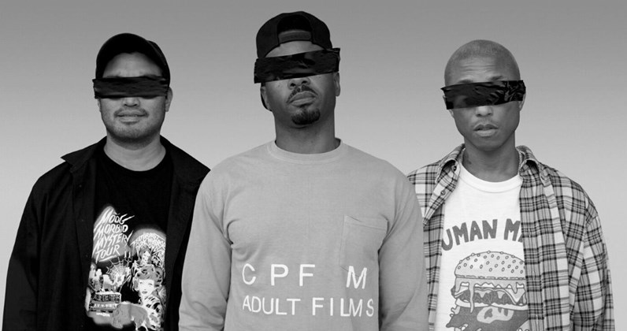

With N.E.R.D’s No_One Ever Really Dies having now been officially released, Pharrell has marked the occasion by discussing the project on his Beats 1 show, going in-depth on the album, breaking it down track-by-track.
Take a look what Pharrell had to say below and let us know what you think about the album in the comments.
“Lemon”
“So the name of the album is called ‘No One Ever Really Dies.’ This first song is called ‘Lemon’ —you might have heard it already—[featuring] Rihanna.”
“Deep Down Body Thurst”
“When we first started on the record, one of the first songs that came together was ‘Lemon’ and one of the second songs where it started to feel really serious was this next record called ‘Deep Down Body Thurst.’
“Voilá”
“The next one is called ‘Voilá. It’s featuring Gucci Mane and Wale and it’s just basically like a cherub song.”
“1000”
“The next one is this song called ‘1000.’ This ‘1000’ record is pushing for everybody and there’s also an uplifting message in it [that] just says to everyone in the mirror there’s a hero 1 0 0 0.”
“Don’t Don’t Do It!”
“The next one is super near and dear to us. It’s called ‘Don’t Don’t Do It!’ It’s featuring Kendrick Lamar. The song is about a brother name Keith Scott who was in Raleigh, North Carolina. He was waiting for his child to get off the school bus and the authorities were looking for someone—someone who did not fit his description at all—and they are telling him to put his hands up. His wife, she’s trying to tell them, ‘Hey, he has a traumatic brain injury,’ and they’re telling him to put his hands up. She’s saying, ‘Don’t do it! Don’t, don’t do it.’ Of course he’s killed. But I’m watching this and I’m like, man, it’s so crazy because you do what they tell you to do and you still end up dying. So this is ‘Don’t Don’t Do It’ featuring Kendrick Lamar.”

“Esp”
“Just trying to do our part. It’s crazy out here and right now what we’re discovering is the truth only matters when it sounds cool. And when it doesn’t sound cool, people just choose not to believe it. So that’s how they’re going to use their minds. We need to use our minds a little bit stronger.”
“Lightning Fire Magic Prayer”
“It’s this daring notion that maybe we could achieve peace [and] a couple of other really amazing things if all at once every human being on the planet put their hands up in the air, you know, like just for a minute to just see what death felt like. What would the energy be like? Nobody would be being killed at that moment, you know? There’d be nobody arguing or something. Like what would that life be like if we could get everybody in to put their hands in the air at one time?”
“Rollinem 7’s”
“[This] is probably one of the most auditorially ambitious songs on the album because it mixes so many genres together.”
“Kites”
“[This] is about teenage life [and] living in a refugee situation because you were trying to find a different life. And who better to enlist as feature on this song than the great Kendrick Lamar once again? And also M.I.A.”
“Secret Life of Tigers”
This next song is called ‘Secret Life of Tigers’ and it is the revenge to the sickness that’s going on in the conservative group of people in this country. This is the fucking revenge. The conservative people have no idea that their kids [are] doing drugs and rebellion against the fact that they are against immigration, the fact that they are against their children’s right to choose between what it is that they want to do, all of those things. These kids are out there partying like fuck you, you’re going to die, and we’re going to grow up and take over this country. And to me when I look at those teenagers that are partying that hard … I look at this situation [and] I say it’s the ‘Secret Life of Tigers.’”
“Lifting You”
The last song on the album, this eleventh song, is called ‘Lifting You’ and really is just like, people talk shit about you, everybody in this room has had somebody talk shit about you. You may or may not have realized that when they’re talking about you, you must fucking matter. It occurred to us that when they say your name they’re actually lifting you. So that’s the name of the song, it’s called ‘Lifting You.’ Go turbo.”
Elsewhere, N.E.R.D recently returned to the stage on Jimmy Kimmel Live!, performing “Lemon” and “1000.”